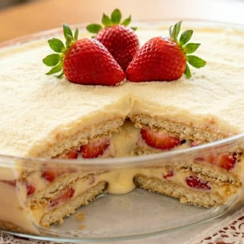

Aprenda a preparar um delicioso pavê de morango com chocolate branco, uma sobremesa cremosa, sofisticada e perfeita para impressionar em qualquer ocasião. A combinação do sabor suave e doce do chocolate branco com a leve acidez dos morangos frescos cria uma explosão de sabores irresistível. Com camadas de creme, biscoitos e muitos morangos, essa receita é fácil de fazer e possui uma apresentação encantadora. Ideal para servir em almoços de família, festas ou momentos especiais, esse pavê conquista tanto pelo visual quanto pelo sabor delicado e apaixonante.

Médio
2h
Projeto para fins
acadêmicos, feito
com amor pela aluna
Lívia Faccin
Copyright © 2026 Sweet Bytes